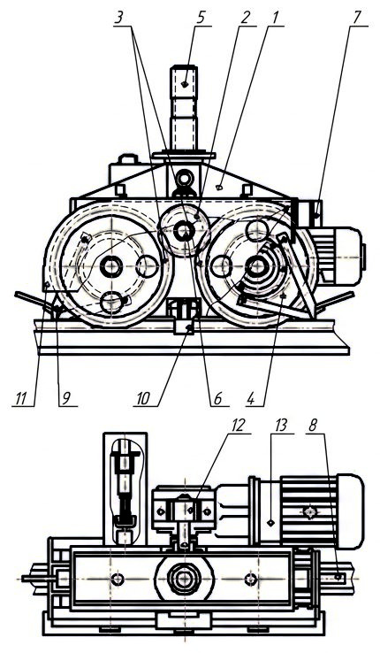
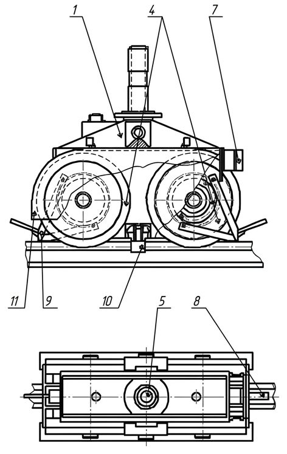

Позвонить: (4842) 75-75-05
Написать сообщение: m-40@inbox.ru
Запасные части для башенных кранов → Ходовая тележка У2260.30

Ходовая тележка У2260.30 оборудована двумя двухребордными ходовыми колесами и имеет шарнирное соединение со шкворнем для равномерной передачи
нагрузок на колеса при любых неровностях рельсового пути. Применяется в механизмах передвижения башенных кранов КБ-308, КБ-309, КБ-401, КБ-403, КБ-404, КБ-405, КБ-408.
Ходовые колеса крана для всех тележек выполнены двухребордными единой конструкции
диаметром 500 мм. Тележки рассчитаны на нагрузку 720 кН.
На кранах устанавливается по две приводные и две неприводные (ведомые) тележки. Последние имеют ту же конструкцию, что и приводные, но отличаются
отсутствием привода.
Ходовые тележки выпускают как с приводом - ведущие, так и без него - ведомые. Ведущая унифицированная тележка грузоподъемностью 40 и 60т состоит из сварной рамы,
к которой крепятся два колеса и приводной ПК-6,3. В верхней части рамы имеется шарнирный шкворень для соединения с ходовой рамой крана.
Конструкция шкворня допускает перемещение тележки по вертикали до 60мм, что уменьшает опасность схода крана с рельсов из-за неравномерных просадок пути.
Подшипники ходовых колес закреплены в съемных буксах, что позволяет легко накатывать колесо в сборе с валом и буксами для замены при поддомкрачивании тележки.
Шестерни открытой передачи закрыты кожухом. Для очистки рельсов от случайных предметов ходовая тележка оборудована двумя сбрасывающими плужками.
Один из торцов тележки оснащен буфером с резиновым амортизатором, который предназначен для восприятия нагрузки при наезде на тупиковый упор, установленный в конце кранового пути.
Тележка оснащена центральным рельсовым захватом, размещенным между колесами непосредственно под шкворнем. Захват имеет губки, постоянно подведенные под головку рельса.
Они препятствуют сходу с рельсов и развороту тележки при отрыве ее от рельса, когда кран работает на плохо уложенных путях.
Тележки снабжены полуавтоматическими захватами, не дающими возможность тележке оторваться от рельса при перегрузках крана.
|
 |
 |
| Рисунок 1. Чертеж ведущей и ведомой ходовой тележки У2260.30 в сборе | |
Таблица 1
Запасные части ходовой тележки У2260.30
№ позиции
на чертеже
Наименование детали
Каталожный номер
1
Рама ходовой тележки
У2260.30.08.000
2
Шестерня промежуточная ведущая (m=10; z=21)
У2260.30.00.006
3
Колесо зубчатое ведомое (m=10; z=53)
У2260.30.00.001
4
Колесо ходовое ведущее в сборе
У2260.30.01.000
4
Колесо ходовое ведомое в сборе
У2260.30.02.000
5
Шкворень
У2260.30.09.002
6
Вал промежуточный
У2260.30.00.004А
7
Буфер
-
8
Противоугонный клин
-
9
Плужок сбрасывающий
-
10
Захват полуавтоматический рельсовый
У2260.28А.08.000
11
Кожух шестерен открытой передачи
-
12
Привод ПК-6,3 в сборе
-
13
Электродвигатель (типа MTF)
-
14
Вал ведущего ходового колеса шлицевой
У2260.30.01.006
15
Вал ведомого ходового колеса
У2260.30.02.001
16
Букса ходового колеса (проходная)
У2260.30.01.003
17
Букса ходового колеса (глухая)
У2260.30.01.003
18
Ходовое колесо К2Р 550×100 ведущее
У2260.30.01.002А
18
Ходовое колесо К2Р 550×100 ведомое
У2260.30.01.002А-01
Цены на ходовую тележку У2260.30 Вы можете узнать здесь, или по телефону:
(4842) 75-75-05
Запасные части ходовой тележки У2260.30
| № позиции на чертеже |
Наименование детали | Каталожный номер |
| 1 | Рама ходовой тележки | У2260.30.08.000 |
| 2 | Шестерня промежуточная ведущая (m=10; z=21) | У2260.30.00.006 |
| 3 | Колесо зубчатое ведомое (m=10; z=53) | У2260.30.00.001 |
| 4 | Колесо ходовое ведущее в сборе | У2260.30.01.000 |
| 4 | Колесо ходовое ведомое в сборе | У2260.30.02.000 |
| 5 | Шкворень | У2260.30.09.002 |
| 6 | Вал промежуточный | У2260.30.00.004А |
| 7 | Буфер | - |
| 8 | Противоугонный клин | - |
| 9 | Плужок сбрасывающий | - |
| 10 | Захват полуавтоматический рельсовый | У2260.28А.08.000 |
| 11 | Кожух шестерен открытой передачи | - |
| 12 | Привод ПК-6,3 в сборе | - |
| 13 | Электродвигатель (типа MTF) | - |
| 14 | Вал ведущего ходового колеса шлицевой | У2260.30.01.006 |
| 15 | Вал ведомого ходового колеса | У2260.30.02.001 |
| 16 | Букса ходового колеса (проходная) | У2260.30.01.003 |
| 17 | Букса ходового колеса (глухая) | У2260.30.01.003 |
| 18 | Ходовое колесо К2Р 550×100 ведущее | У2260.30.01.002А |
| 18 | Ходовое колесо К2Р 550×100 ведомое | У2260.30.01.002А-01 |